Ver código
options(
knitr.table.format = "html",
scipen = 999
)options(
knitr.table.format = "html",
scipen = 999
)
ipak <- function(pkg){
options(repos = c(CRAN="https://cloud.r-project.org"))
new.pkg <- pkg[!(pkg %in% rownames(installed.packages()))]
if(length(new.pkg)) install.packages(new.pkg, dependencies = TRUE)
invisible(lapply(pkg, function(p)
suppressPackageStartupMessages(library(p, character.only = TRUE))
))
}
packages <- c("tidyverse","kableExtra","psych","readxl")
ipak(packages)En este documento se analizan ejercicios relacionados con variables aleatoria discretas y su función de distribución acumulada. A partir de la información proporcionada, se busca calcular probabilidades específicas en distintos intervalos, así como determinar medidas importantes como la esperanza, la varianza y la desviación estándar.
Estos ejercicios permiten comprender cómo interpretar una función de distribución y cómo extraer de ella información clave sobre el comportamiento de una variable aleatoria en contextos reales, como el análisis de defectos en productos.
Una organización de consumidores anota regularmente el número de defectos importantes que se encuentran en un automóvil nuevo. De sus estudios ha encontrado que la función de distribución de la variable aleatoria X es:
Sea X una variable aleatoria discreta definida por su Función de Distribución Acumulada (CDF):
F(x) = \begin{cases} 0 & \text{si } x < 0 \\ 0.06 & \text{si } 0 \leq x < 1 \\ 0.19 & \text{si } 1 \leq x < 2 \\ 0.39 & \text{si } 2 \leq x < 3 \\ 0.67 & \text{si } 3 \leq x < 4 \\ 0.92 & \text{si } 4 \leq x < 5 \\ 0.97 & \text{si } 5 \leq x < 6 \\ 1 & \text{si } x \geq 6 \end{cases}
a) Calcular P(X = 2)
b) Calcular P(X \geq 3)
c) Calcular P(2 \leq X \leq 5)
d) Calcular P(2 < X < 5)
e) Obtener la Esperanza E[X], la Varianza Var(X) y la Desviación Típica \sigma.
Para resolver los incisos, lo primero que necesitamos es obtener la función de probabilidad p(x) = P(X = x). En una variable discreta, esto se calcula restando los saltos de la función acumulada: p(x_i) = F(x_i) - F(x_{i-1})
Calculamos p(x) para cada valor posible:
| x | F(x) Acumulada | p(x) Probabilidad |
|---|---|---|
| 0 | 0.06 | 0.06 |
| 1 | 0.19 | 0.13 |
| 2 | 0.39 | 0.20 |
| 3 | 0.67 | 0.28 |
| 4 | 0.92 | 0.25 |
| 5 | 0.97 | 0.05 |
| 6 | 1.00 | 0.03 |
a) Calcular: p[X = 2]
Como calculamos anteriormente, la probabilidad puntual se obtiene mediante la diferencia de las acumuladas:
p[X = 2] = F(2) - F(1) = 0.39 - 0.19 = \mathbf{0.20}
b) Calcular: p[X \ge 3]
Representa la probabilidad de que el valor sea 3, 4, 5 o 6. Utilizando el complemento, podemos calcularlo como:
P(X \ge 3) = 1 - P(X < 3) = 1 - F(2) p[X \ge 3] = 1 - 0.39 = \mathbf{0.61}
c) Calcular: p[2 \leq X \leq 5]
Incluye los valores 2, 3, 4 y 5.
Usando la acumulada:
p[2 \leq X \leq 5] = F(5) - F(1) = 0,97 - 0,19 = \mathbf{0,78}
d) Calcular: p[2 < X < 5]
Solo incluye los valores 3 y 4 (ya que es estrictamente mayor que 2 y menor que 5):
p[2 < X < 5] = p(3) + p(4) = 0,28 + 0,25 = \mathbf{0,53}
Gráfica de f(x) (Función de Probabilidad) y Gráfica de F(x) (Función de Distribución Acumulada)
# Datos del ejercicio
x <- 0:6
p_x <- c(0.06, 0.13, 0.20, 0.28, 0.25, 0.05, 0.03) # Probabilidades puntuales
F_x <- cumsum(p_x) # Probabilidades acumuladas
# Configurar para ver dos gráficas juntas
par(mfrow=c(1,2))
# Gráfica 1: Probabilidad Puntual (p(x))
barplot(p_x, names.arg=x, col="steelblue", main="Probabilidad Puntual p(x)",
xlab="Defectos", ylab="Probabilidad")
# Gráfica 2: Función Acumulada (F(x))
plot(x, F_x, type="s", col="red", lwd=2, main="Función Acumulada F(x)",
xlab="Defectos", ylab="F(x) Acumulada", ylim=c(0,1))
points(x, F_x, pch=19, col="red")
e) Esperanza, Varianza, Desviación y Coeficiente de Variación
| xi | p(xi) | xi · p(xi) | xi2 · p(xi) |
|---|---|---|---|
| 0 | 0.06 | 0.00 | 0.00 |
| 1 | 0.13 | 0.13 | 0.13 |
| 2 | 0.20 | 0.40 | 0.80 |
| 3 | 0.28 | 0.84 | 2.52 |
| 4 | 0.25 | 1.00 | 4.00 |
| 5 | 0.05 | 0.25 | 1.25 |
| 6 | 0.03 | 0.18 | 1.08 |
1). Esperanza Matemática (Media de la distribución)
Es el valor promedio que esperaríamos encontrar si revisáramos muchísimos automóviles.
Fórmula:
E[X] = \sum_{i=1}^{n} x_i \cdot p(x_i)
Aplicación:
E[X] = (0 \cdot 0,06) + (1 \cdot 0,13) + (2 \cdot 0,20) + (3 \cdot 0,28) + (4 \cdot 0,25) + (5 \cdot 0,05) + (6 \cdot 0,03)E[X] = 0 + 0,13 + 0,40 + 0,84 + 1,00 + 0,25 + 0,18
Resultado:
E[X] = 2,80
2). Varianza
Mide qué tan dispersos están los datos respecto a la media (en unidades al cuadrado).Primero calculamos E[X^2] que nos dio 9,78.
Fórmula:
Var(X) = E[X^2] - (E[X])^2
Aplicación:
Var(X) = 9,78 - (2,80)^2Var(X) = 9,78 - 7,84
Resultado:
Var(X) = 1,94
3). Desviación Estándar (Típica):
Es la raíz cuadrada de la varianza. Nos da la dispersión en las mismas unidades que la variable original (defectos).
Fórmula:
\sigma = \sqrt{Var(X)}
Aplicación:
\sigma = \sqrt{1,94}
Resultado:
\sigma \approx 1,3928
4). Coeficiente de Variación (CV)
Es una medida relativa que indica qué tan grande es la desviación en comparación con la media. Se expresa en porcentaje.
Fórmula:
CV = \left( \frac{\sigma}{E[X]} \right) \cdot 100 Aplicación:
CV = \left( \frac{1,3928}{2,80} \right) \cdot 100CV = 0,4974 \cdot 100
Resultado:
CV \approx 49,74\%
# Cargar librería para gráficas estéticas
if(!require(ggplot2)) install.packages("ggplot2")
library(ggplot2)
# 1. Datos del ejercicio
df <- data.frame(
x = 0:6,
p_x = c(0.06, 0.13, 0.20, 0.28, 0.25, 0.05, 0.03)
)
# 2. Valores calculados previamente
esperanza <- 2.80
varianza <- 1.94
desviacion <- 1.3928
cv <- 49.74
# 3. Crear la gráfica de f(x)
ggplot(df, aes(x = x, y = p_x)) +
# Dibujar las barras de probabilidad
geom_bar(stat = "identity", fill = "skyblue", color = "white", alpha = 0.7) +
# Añadir el rango de la Desviación Estándar (Sombreado)
annotate("rect", xmin = esperanza - desviacion, xmax = esperanza + desviacion,
ymin = 0, ymax = 0.30, alpha = 0.1, fill = "black") +
# Línea vertical para la Esperanza
geom_vline(xintercept = esperanza, color = "darkblue", linetype = "dashed", size = 1.2) +
# Etiquetas de texto para los resultados
annotate("text", x = esperanza + 0.2, y = 0.29, label = paste("E[X] =", esperanza), color = "darkblue", hjust = 0) +
annotate("text", x = 5, y = 0.25, label = paste("Var:", varianza), size = 4) +
annotate("text", x = 5, y = 0.23, label = paste("SD:", round(desviacion, 2)), size = 4) +
annotate("text", x = 5, y = 0.21, label = paste("CV:", cv, "%"), size = 4, fontface = "bold") +
# Configuración estética
scale_x_continuous(breaks = 0:6) +
labs(title = "Gráfica de f(x) con Estadísticos Descriptivos",
subtitle = "El área sombreada indica la dispersión (Media ± DE)",
x = "Número de Defectos (X)",
y = "Probabilidad p(x)") +
theme_minimal()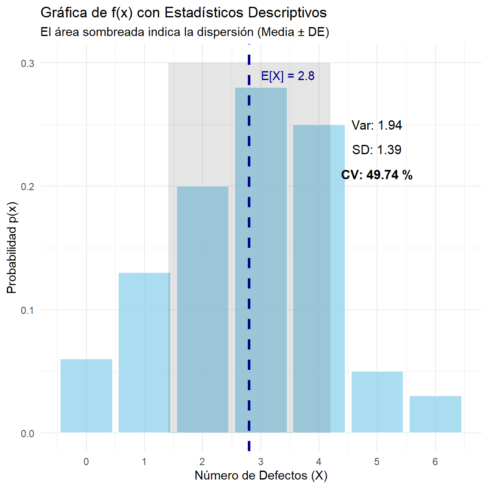
Sea X la variable aleatoria que representa la suma de los resultados obtenidos al lanzar dos dados equilibrados de seis caras cada uno.
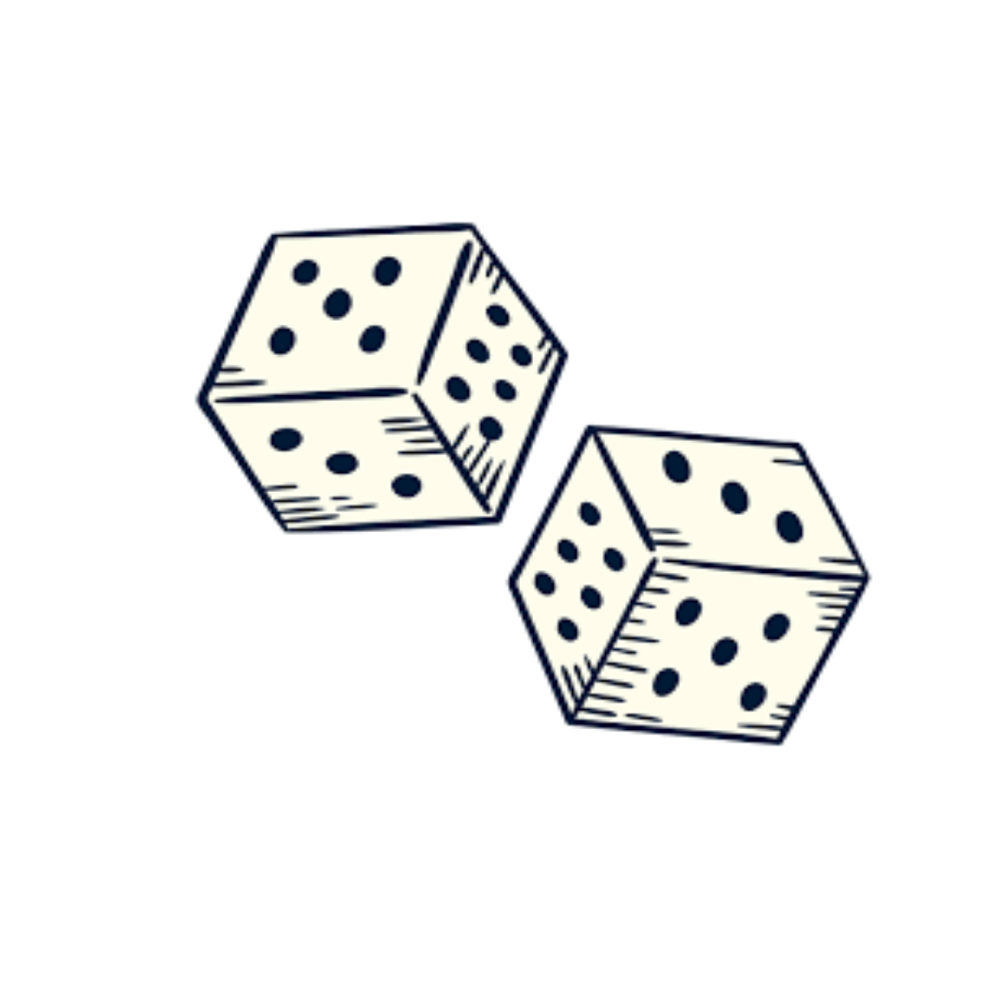
A partir de esta definición, se requiere resolver los siguientes puntos:
a) ¿Cuál es el soporte de la variable aleatoria X?
b) Obtener la función de probabilidad (f(x)) de la variable y diseñar su respectivo diagrama de barras.
c) Hallar la función de distribución (F(x)) de X y representarla gráficamente mediante una función escalonada.
d) Calcular la probabilidad de que la suma de los resultados sea mayor que 4 y menor que 8.(Expresado como: P(4 < X < 8))
e) Calcular la probabilidad de que la suma sea mayor o igual que 4 y menor o igual que 8.(Expresado como: P(4 \leq X \leq 8))
f) Determinar los parámetros estadísticos de la distribución:
Valor esperado (Esperanza matemática E[X]).
Varianza (Var(X)).
Desviación típica (\sigma).
Coeficiente de variación (CV).
a) ¿Cuál es el soporte de la variable aleatoria X?
El soporte son todos los valores posibles que puede tomar la suma. La suma mínima es:
1+1 = \mathbf{2}
La suma máxima es
6+6 = \mathbf{12}
Soporte:
S_X = \{2, 3, 4, 5, 6, 7, 8, 9, 10, 11, 12\}
b) Función de probabilidad y diagrama de barras
Para obtener f(x) = P(X=x), contamos cuántas de las 36 combinaciones suman cada valor:
| x | Combinaciones posibles | f(x) = P(X = x) |
|---|---|---|
| 2 | (1,1) | 1/36 ≈ 0.028 |
| 3 | (1,2), (2,1) | 2/36 ≈ 0.056 |
| 4 | (1,3), (2,2), (3,1) | 3/36 ≈ 0.083 |
| 5 | (1,4), (2,3), (3,2), (4,1) | 4/36 ≈ 0.111 |
| 6 | (1,5), (2,4), (3,3), (4,2), (5,1) | 5/36 ≈ 0.139 |
| 7 | (1,6), (2,5), (3,4), (4,3), (5,2), (6,1) | 6/36 ≈ 0.167 |
| 8 | (2,6), (3,5), (4,4), (5,3), (6,2) | 5/36 ≈ 0.139 |
| 9 | (3,6), (4,5), (5,4), (6,3) | 4/36 ≈ 0.111 |
| 10 | (4,6), (5,5), (6,4) | 3/36 ≈ 0.083 |
| 11 | (5,6), (6,5) | 2/36 ≈ 0.056 |
| 12 | (6,6) | 1/36 ≈ 0.028 |

c) Función de distribución F(X)
Es la suma acumulada de las probabilidades anteriores:
F(2) = 1/36
F(3) = 3/36 (1+2)
F(4) = 6/36 (1+2+3) ... y así hasta
F(12) = 36/36 = 1
Gráficamente se representa como una escalera que llega hasta el 1.
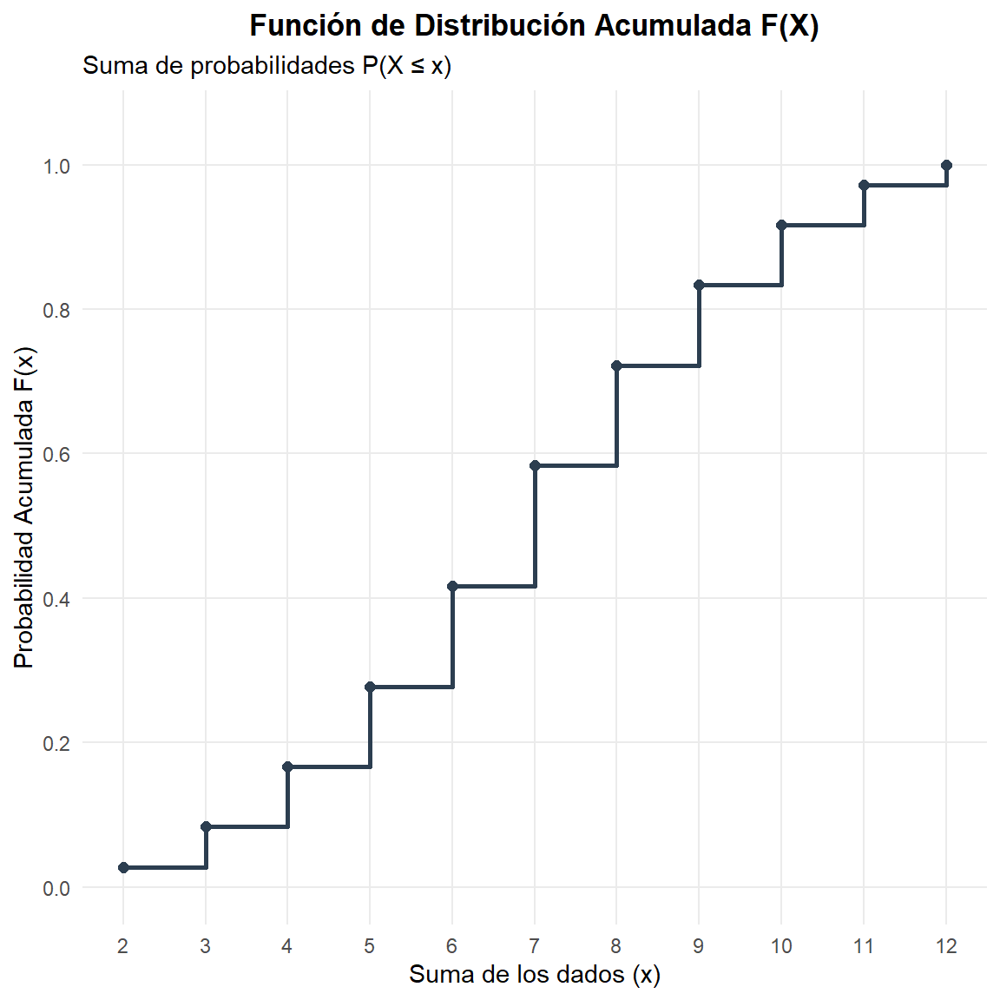
d) P(4 < X < 8)
Son los valores 5, 6 y 7 (no incluye 4 ni 8):
# Definición de variables (si no están en el ambiente)
x <- 2:12
p_x <- c(1, 2, 3, 4, 5, 6, 5, 4, 3, 2, 1) / 36
# Cálculo: Filtramos los valores de p_x donde x está entre 4 y 8 (excluyéndolos)
prob_d <- sum(p_x[x > 4 & x < 8])
# Resultado
cat("La probabilidad P(4 < X < 8) es:", round(prob_d, 4))La probabilidad P(4 < X < 8) es: 0.4167e) P(4 \leq X \leq 8)
Aquí sí incluimos el 4 y el 8:
# Definición de variables (si no están en el ambiente)
x <- 2:12
p_x <- c(1, 2, 3, 4, 5, 6, 5, 4, 3, 2, 1) / 36
# Cálculo: Filtramos los valores de p_x donde x está entre 4 y 8 (incluyéndolos)
prob_e <- sum(p_x[x >= 4 & x <= 8])
# Resultado
cat("La probabilidad P(4 <= X <= 8) es:", round(prob_e, 4))La probabilidad P(4 <= X <= 8) es: 0.6389f) Esperanza, Varianza, Desviación y Coeficiente de Variación
# 1. Definición de los vectores de la variable aleatoria
x <- 2:12
casos <- c(1, 2, 3, 4, 5, 6, 5, 4, 3, 2, 1)
p_x <- casos / 36
# 2. VALOR ESPERADO (Esperanza Matemática)
# Se calcula como la suma del producto de cada valor por su probabilidad
esperanza <- sum(x * p_x)
# 3. VARIANZA (Var(X))
# Usamos la fórmula: E[X^2] - (E[X])^2
esperanza_x2 <- sum((x^2) * p_x)
varianza <- esperanza_x2 - (esperanza^2)
# 4. DESVIACIÓN TÍPICA (sigma)
# Es la raíz cuadrada de la varianza
desviacion <- sqrt(varianza)
# 5. COEFICIENTE DE VARIACIÓN (CV)
# Relación porcentual entre la desviación y la media
cv <- (desviacion / esperanza) * 100
# --- Visualización de Resultados ---
cat("Esperanza Matemática E[X]:", esperanza, "\n")Esperanza Matemática E[X]: 7 cat("Varianza Var(X):", round(varianza, 4), "\n")Varianza Var(X): 5.8333 cat("Desviación Típica (sigma):", round(desviacion, 4), "\n")Desviación Típica (sigma): 2.4152 cat("Coeficiente de Variación:", round(cv, 2), "%\n")Coeficiente de Variación: 34.5 %library(ggplot2)
# 1. Datos base
x <- 2:12
p_x <- c(1, 2, 3, 4, 5, 6, 5, 4, 3, 2, 1) / 36
df <- data.frame(x, p_x)
# 2. Parámetros calculados
esperanza <- sum(x * p_x)
varianza <- sum((x^2) * p_x) - (esperanza^2)
sigma <- sqrt(varianza)
cv <- (sigma / esperanza) * 100
# 3. Construcción de la Gráfica
ggplot(df, aes(x = x, y = p_x)) +
# Barras de probabilidad
geom_bar(stat = "identity", fill = "steelblue", alpha = 0.6) +
# INDICADOR 1: Esperanza (Línea central)
geom_vline(xintercept = esperanza, color = "red", linetype = "dashed", size = 1.2) +
# INDICADOR 2: Desviación Típica (Sombreado de dispersión)
annotate("rect", xmin = esperanza - sigma, xmax = esperanza + sigma,
ymin = 0, ymax = 0.17, alpha = 0.15, fill = "darkorange") +
# INDICADOR 3 Y 4: Varianza y CV (Etiquetas de texto)
annotate("label", x = 10.5, y = 0.15,
label = paste0("Var(X) = ", round(varianza, 2), "\nCV = ", round(cv, 1), "%"),
fill = "white", color = "black", fontface = "bold") +
# Etiquetas adicionales para claridad
annotate("text", x = esperanza + 0.3, y = 0.02, label = "Media (7)", color = "red", angle = 90) +
annotate("text", x = esperanza - sigma + 0.5, y = 0.16, label = "Rango σ", color = "darkorange3") +
# Estética y Escalas
scale_x_continuous(breaks = 2:12) +
labs(title = "Análisis Estadístico de la Suma de Dados",
subtitle = "Visualización de tendencia central y dispersión",
x = "Suma de los Resultados (X)",
y = "Probabilidad f(x)") +
theme_minimal()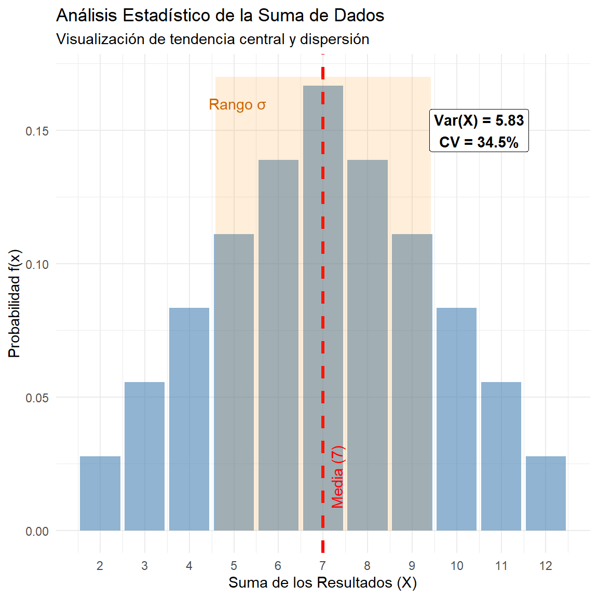
La variable aleatoria X tiene una función de densidad definida por tramos de la siguiente manera:
f(x) = \begin{cases} \frac{1}{3} & \text{si } x \in (0,1) \ \frac{1}{3} & \text{si } x \in (2,4) \ 0 & \text{en el resto} \end{cases}
a) Demostrar que f(x) es una función de densidad válida y realizar su representación gráfica.
b) Obtener la función de distribución (F(x)) de la variable aleatoria X y representarla gráficamente.
c) Calcular la probabilidad puntual en el intervalo: P(X < 0.6).
d) Calcular la probabilidad en el intervalo cerrado: P(0.3 \leq X \leq 0.6).
e) Calcular la probabilidad que abarca ambos tramos: P(0.6 < X < 3.4).
f) Determinar el rango intercuartílico (IQR) de la variable aleatoria X.
a) Demostrar que f(x) es una función de densidad
Para ser una función de densidad, debe cumplir dos condiciones:
No negatividad: f(x) \geq 0 (se cumple, los valores son 1/3 y 0).
Área total igual a 1: \int_{-\infty}^{\infty} f(x) dx = 1.
Dado que la función está definida por tramos, dividimos la integral:
\int_{0}^{1} \frac{1}{3} dx + \int_{1}^{2} 0 dx + \int_{2}^{4} \frac{1}{3} dx Calculamos cada parte:
\left[ \frac{x}{3} \right]_{0}^{1} = \frac{1}{3} - 0 = \frac{1}{3}
Tramo 2: 0
Tramo 3: $ \left[ \frac{x}{3} \right]{2}^{4} = \frac{4}{3} - \frac{2}{3} = \frac{2}{3}
Suma total: \frac{1}{3} + \frac{2}{3} = \mathbf{1}
Conclusión: f(x) es una función de densidad válida.
Representación Gráfica
library(ggplot2)
# Definimos la función de densidad de forma vectorizada
f_densidad <- function(x) {
y <- numeric(length(x))
y[x > 0 & x < 1] <- 1/3
y[x > 2 & x < 4] <- 1/3
return(y)
}
# Creamos un set de datos para la gráfica
x_vals <- seq(-0.5, 4.5, length.out = 1000)
df_grafica <- data.frame(x = x_vals, y = f_densidad(x_vals))
# Graficamos
ggplot(df_grafica, aes(x = x, y = y)) +
geom_area(fill = "lightgreen", alpha = 0.4) + # Sombreado del área
geom_line(color = "darkgreen", size = 1) + # Línea de la función
scale_y_continuous(limits = c(0, 0.5)) +
labs(
title = "Función de Densidad f(x)",
subtitle = "Demostración visual: Área total (1/3 + 2/3) = 1",
x = "Variable Aleatoria X",
y = "Densidad f(x)"
) +
theme_minimal()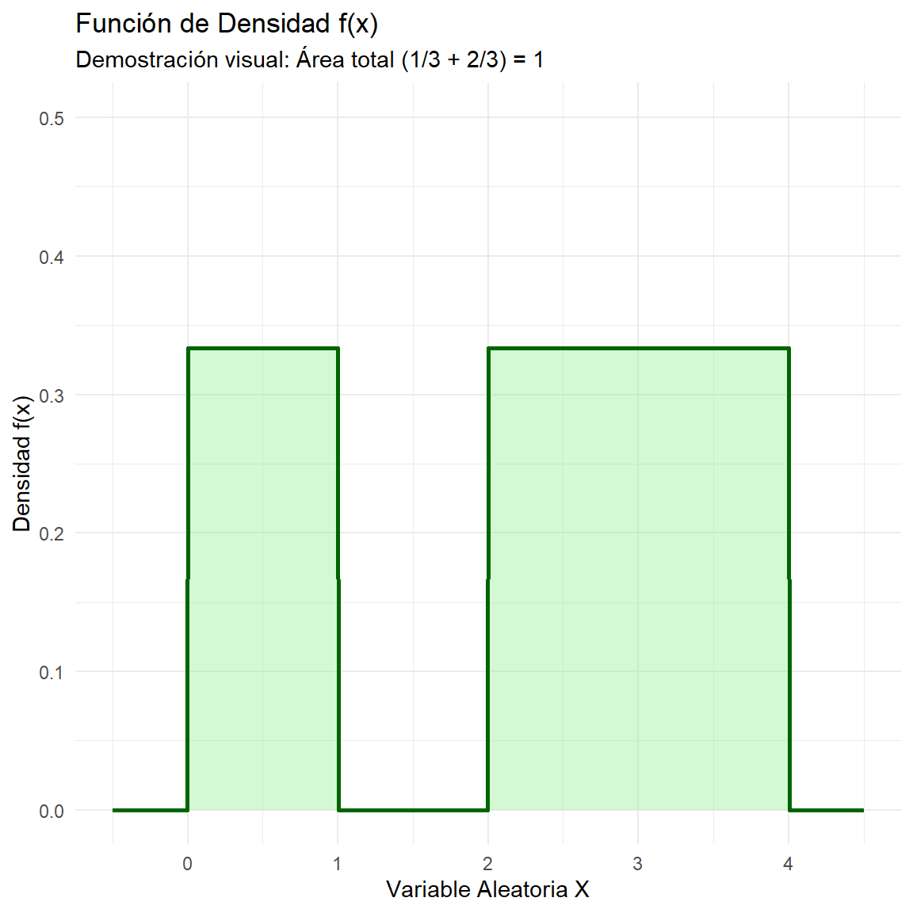
b) Obtención de la Función de Distribución F(x)
La definición es F(x) = \int_{-\infty}^{x} f(t) \, dt. Vamos por partes:
Tramo 1: x < 0 Como f(x) = 0, la acumulación es nula:F(x) = 0
Tramo 2: 0 \leq x < 1Integramos la densidad en este intervalo: F(x) = \int_{0}^{x} \frac{1}{3} \, dt = \left[ \frac{t}{3} \right]_{0}^{x} = \mathbf{\frac{x}{3}} Nota: Al llegar a x=1, el valor acumulado es 1/3.
Tramo 3: 1 \leq x < 2 En este “hueco” la densidad es 0. El área no aumenta, se mantiene constante: F(x) = F(1) + \int_{1}^{x} 0 \, dt = \mathbf{\frac{1}{3}}
Tramo 4: 2 \leq x < 4Sumamos lo acumulado hasta ahora (1/3) más la integral del nuevo tramo: F(x) = \frac{1}{3} + \int_{2}^{x} \frac{1}{3} \, dt = \frac{1}{3} + \left[ \frac{t}{3} \right]_{2}^{x} = \frac{1}{3} + \frac{x-2}{3} = \mathbf{\frac{x-1}{3}} Nota: Al llegar a x=4, evaluamos \frac{4-1}{3} = 1.
Representación Gráfica
library(ggplot2)
# Definimos la F(x) calculada
F_distribucion <- function(x) {
y <- numeric(length(x))
y[x >= 0 & x < 1] <- x[x >= 0 & x < 1] / 3
y[x >= 1 & x < 2] <- 1/3
y[x >= 2 & x < 4] <- (x[x >= 2 & x < 4] - 1) / 3
y[x >= 4] <- 1
return(y)
}
# Datos para graficar
df_fda <- data.frame(x = seq(-0.5, 4.5, length.out = 1000))
df_fda$y <- F_distribucion(df_fda$x)
# Gráfica
ggplot(df_fda, aes(x = x, y = y)) +
geom_line(color = "darkblue", size = 1.2) +
scale_y_continuous(breaks = seq(0, 1, 0.25)) +
scale_x_continuous(breaks = 0:4) +
labs(
title = "Función de Distribución Acumulada F(x)",
subtitle = "Se observa el crecimiento lineal y el tramo constante",
x = "x", y = "F(x)"
) +
theme_minimal()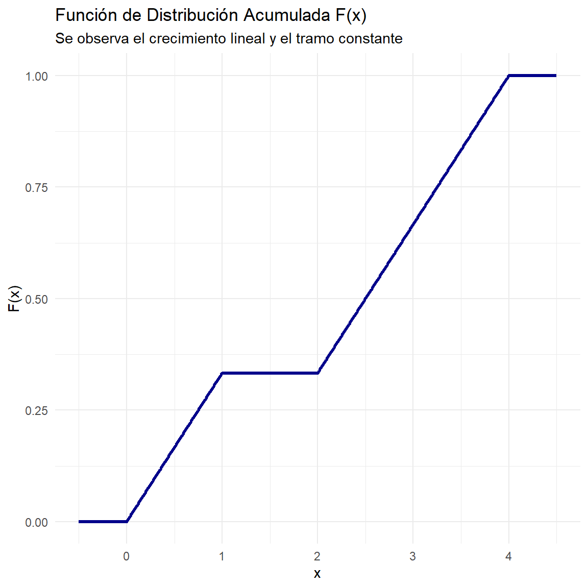
c) Cálculo de P(X < 0.6) con integrate()
En una variable continua, la probabilidad es la integral de la función de densidad desde el límite inferior (-\infty) hasta el punto deseado (0.6). P(X < 0.6) = \int_{0}^{0.6} f(x) \, dx
# 1. Definimos la función de densidad f(x) (f minúscula)
f_densidad <- function(x) {
ifelse(x > 0 & x < 1, 1/3,
ifelse(x > 2 & x < 4, 1/3, 0))
}
# 2. Usamos la herramienta nativa 'integrate' para hallar el área
# Integramos desde 0 (límite inferior real) hasta 0.6
resultado_c <- integrate(f_densidad, lower = 0, upper = 0.6)
# 3. Mostrar el resultado
cat("La probabilidad P(X < 0.6) es:", resultado_c$value)La probabilidad P(X < 0.6) es: 0.2“Utilizando la función nativa integrate de R sobre la función de densidad f(x) en el intervalo [0, 0.6], obtenemos un valor de 0.2. Esto representa el área del primer bloque de densidad hasta el punto solicitado, confirmando el cálculo analítico realizado mediante la FDA.”
d) Calcular P(0.3 \leq X \leq 0.6)
Matemáticamente, buscamos el área de la función de densidad f(x) en el intervalo [0.3, 0.6]:
P(0.3 \leq X \leq 0.6) = \int_{0.3}^{0.6} f(x) \, dx Como ambos límites están dentro del primer bloque de la función (donde la altura es 1/3), el resultado esperado es:
\text{Base} \times \text{Altura} = (0.6 - 0.3) \times \frac{1}{3} = 0.3 \times \frac{1}{3} = \mathbf{0.1}
# 1. Definimos la función de densidad f(x) (si no está cargada)
f_densidad <- function(x) {
ifelse(x > 0 & x < 1, 1/3,
ifelse(x > 2 & x < 4, 1/3, 0))
}
# 2. Usamos 'integrate' para el intervalo [0.3, 0.6]
resultado_d <- integrate(f_densidad, lower = 0.3, upper = 0.6)
# 3. Mostrar el resultado numérico
cat("La probabilidad P(0.3 <= X <= 0.6) es:", resultado_d$value)La probabilidad P(0.3 <= X <= 0.6) es: 0.1El comando integrate: R toma la función f_densidad y calcula el área encerrada entre el eje x y la línea de la función, limitando el cálculo desde el valor lower (0.3) hasta upper (0.6).
Precisión: Al usar esta herramienta nativa, R te devuelve un objeto que incluye el valor (value) y el error estimado, asegurando que el cálculo es exacto.
e) Calcular P(0.6 < X < 3.4)
Para calcular esta probabilidad en una variable continua, planteamos la integral definida de la función de densidad f(x) en el intervalo solicitado:
P(0.6 < X < 3.4) = \int_{0.6}^{3.4} f(x) \, dx Dado que la función f(x) está definida por tramos, dividimos la integral en tres partes según los límites de la función:
Tramo 1 (de 0.6 a 1): Donde f(x) = 1/3.
Tramo 2 (de 1 a 2): Donde f(x) = 0 (el “hueco”).
Tramo 3 (de 2 a 3.4): Donde f(x) = 1/3.
Desarrollo matemático:
P = \int_{0.6}^{1} \frac{1}{3} \, dx + \int_{1}^{2} 0 \, dx + \int_{2}^{3.4} \frac{1}{3} \, dx - Resolvemos cada integral:
Primero: \left[ \frac{x}{3} \right]_{0.6}^{1} = \frac{1}{3} - \frac{0.6}{3} = \frac{1 - 0.6}{3} = \frac{0.4}{3} = \mathbf{0.1333}
Segundo: 0 (No hay área acumulada entre 1 y 2).
Tercero: \left[ \frac{x}{3} \right]_{2}^{3.4} = \frac{3.4}{3} - \frac{2}{3} = \frac{3.4 - 2}{3} = \frac{1.4}{3} = \mathbf{0.4667}
Resultado final:
P(0.6 < X < 3.4) = 0.1333 + 0 + 0.4667 = \mathbf{0.6}
f) Determinación del Rango Intercuartílico (IQR):
El IQR se define como la diferencia entre el tercer cuartil (Q_3) y el primer cuartil (Q_1):
IQR = Q_3 - Q_1
1). Hallar el Primer Cuartil (Q_1)
El primer cuartil es el valor de x tal que la probabilidad acumulada es 0.25 (F(x) = 0.25). Como 0.25 es menor que 1/3 (que es 0.3333), sabemos que Q_1 se encuentra en el primer tramo de la función (0 \leq x < 1):
F(x) = \frac{x}{3}
\frac{Q_1}{3} = 0.25 Q_1 = 0.25 \times 3 Q_1 = \mathbf{0.75} 2). Hallar el Tercer Cuartil (Q_3)
El tercer cuartil es el valor de x tal que la probabilidad acumulada es 0.75 (F(x) = 0.75).Como 0.75 es mayor que 1/3, sabemos que Q_3 se encuentra en el segundo tramo de crecimiento (2 \leq x < 4):
F(x) = \frac{x - 1}{3} \frac{Q_3 - 1}{3} = 0.75
Q_3 - 1 = 0.75 \times 3
Q_3 - 1 = 2.25
Q_3 = 2.25 + 1
Q_3 = \mathbf{3.25}
3). Calcular el Rango Intercuartílico (IQR)
Ahora simplemente restamos ambos valores:
IQR = 3.25 - 0.75 IQR = \mathbf{2.5}
Esperanza, Varianza, Desviación y Coeficiente de Variación
# 1. Definimos la función de densidad f(x)
f_densidad <- function(x) {
ifelse((x > 0 & x < 1) | (x > 2 & x < 4), 1/3, 0)
}
# --- INDICADOR 1: Esperanza Matemática E[X] ---
# E[X] = Integral de x * f(x)
esperanza <- integrate(function(x) x * f_densidad(x), lower = 0, upper = 4)$value
# --- INDICADOR 2: Varianza Var(X) ---
# Primero el segundo momento: E[X^2] = Integral de x^2 * f(x)
segundo_momento <- integrate(function(x) x^2 * f_densidad(x), lower = 0, upper = 4)$value
varianza <- segundo_momento - esperanza^2
# --- INDICADOR 3: Desviación Típica (sigma) ---
desviacion <- sqrt(varianza)
# --- INDICADOR 4: Coeficiente de Variación (CV) ---
cv <- (desviacion / esperanza) * 100
# Resultados con formato estético
cat("--- Resultados Estadísticos ---",
"\nEsperanza (Media): ", round(esperanza, 4),
"\nVarianza: ", round(varianza, 4),
"\nDesviación Típica: ", round(desviacion, 4),
"\nCoef. de Variación: ", round(cv, 2), "%")--- Resultados Estadísticos ---
Esperanza (Media): 2.1667
Varianza: 1.6389
Desviación Típica: 1.2802
Coef. de Variación: 59.09 %library(ggplot2)
# 1. Definición de la función y cálculos (ya realizados)
f_densidad <- function(x) ifelse((x > 0 & x < 1) | (x > 2 & x < 4), 1/3, 0)
esp <- 13/6 # 2.1667
var_x <- 1.6389
desv <- sqrt(var_x) # 1.2802
cv_val <- 59.08
# 2. Creación de la gráfica
x_seq <- seq(-0.5, 4.5, length.out = 1000)
df <- data.frame(x = x_seq, y = f_densidad(x_seq))
ggplot(df, aes(x = x, y = y)) +
# Áreas de densidad
geom_area(fill = "gray90", color = "black", alpha = 0.5) +
# INDICADOR 1: Esperanza (Línea central)
geom_vline(xintercept = esp, color = "red", linetype = "dashed", size = 1.1) +
# INDICADOR 2: Desviación Típica (Rango de dispersión)
# Sombreado que muestra hacia dónde se alejan los datos
annotate("rect", xmin = esp - desv, xmax = esp + desv,
ymin = 0, ymax = 0.33, alpha = 0.2, fill = "orange") +
# INDICADORES 3 y 4: Etiquetas de texto para Varianza y CV
annotate("label", x = 3.2, y = 0.45,
label = paste0("Var(X) = ", round(var_x, 2), "\nCV = ", round(cv_val, 1), "%"),
fill = "white", fontface = "bold") +
# Etiquetas de guía
annotate("text", x = esp + 0.1, y = 0.1, label = "E[X]", color = "red", hjust = 0) +
annotate("text", x = esp, y = 0.35, label = "Rango de Desviación (σ)", color = "darkorange3") +
# Estética
scale_x_continuous(breaks = 0:4) +
scale_y_continuous(limits = c(0, 0.5)) +
labs(title = "Análisis de Indicadores: Variable X",
subtitle = "La Esperanza (2.17) cae en el 'hueco' de probabilidad",
x = "Valor de la Variable X",
y = "Densidad f(x)") +
theme_minimal()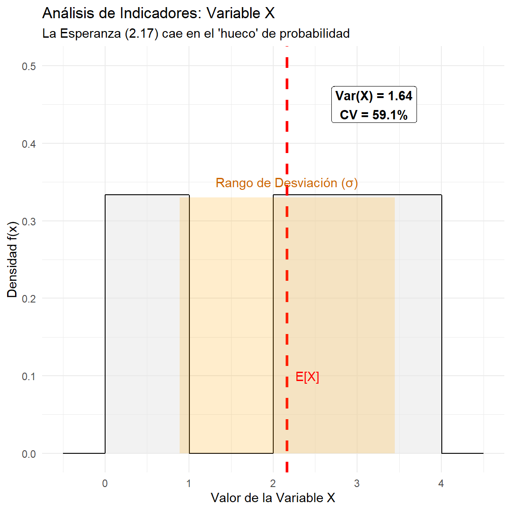
La variable aleatoria continua X tiene una función de densidad definida por tramos:
f(x) =
\begin{cases}
x & \text{si } 0 < x < 1 \\
2 - x & \text{si } 1 \leq x < 2 \\
0 & \text{en cualquier otra parte}
\end{cases}
a) Demostración de densidad: Demostrar analíticamente que f(x) cumple con las propiedades de una función de densidad y realizar su representación gráfica.
b) Función de Distribución: Obtener la expresión matemática de la Función de Distribución Acumulada F(x) y representarla gráficamente.
c) Momentos de la distribución: Calcular el Valor Esperado E[X] y la Varianza Var(X) de la variable.
d) Análisis de posición: Hallar los Percentiles 30 y 70 de la distribución.
a) Demostración de densidad
En 0 < x < 1, f(x) = x, que es positivo.
En 1 \leq x < 2, f(x) = 2 - x, que es positivo (ya que x no supera a 2).
En el resto, f(x) = 0.
Conclusión: Se cumple.
Demostración analítica (paso a paso):
Dividimos la integral según los tramos de la función:
\int_{0}^{2} f(x) \, dx = \int_{0}^{1} x \, dx + \int_{1}^{2} (2 - x) \, dx
Primera parte: \int_{0}^{1} x \, dx = \left[ \frac{x^2}{2} \right]_{0}^{1} = \frac{1^2}{2} - \frac{0^2}{2} = \mathbf{0.5}
Segunda parte: \int_{1}^{2} (2 - x) \, dx = \left[ 2x - \frac{x^2}{2} \right]_{1}^{2}
= \left( 2(2) - \frac{2^2}{2} \right) - \left( 2(1) - \frac{1^2}{2} \right)
= (4 - 2) - (2 - 0.5) = 2 - 1.5 = \mathbf{0.5}
Suma total: 0.5 + 0.5 = \mathbf{1}.
Como la integral de la función en todo su dominio es igual a 1 y la función es no negativa, queda demostrado que f(x) es una función de densidad de probabilidad legítima.
Representación Gráfica función de densidad
library(ggplot2)
# Definimos f(x) de forma vectorizada (si no la tienes cargada)
f_densidad <- function(x) {
ifelse(x > 0 & x < 1, x,
ifelse(x >= 1 & x < 2, 2 - x, 0))
}
# Generamos datos para graficar una línea suave
x_vals <- seq(-0.2, 2.2, length.out = 1000)
df_f <- data.frame(x = x_vals, y = f_densidad(x_vals))
# Graficamos con ggplot2
ggplot(df_f, aes(x = x, y = y)) +
# Sombreado del área (el triángulo)
geom_area(fill = "skyblue", alpha = 0.4) +
# Línea del contorno (azul fuerte)
geom_line(color = "darkblue", size = 1.2) +
# Puntos clave en los ejes
scale_x_continuous(breaks = seq(0, 2, 0.5)) +
scale_y_continuous(limits = c(0, 1.1), breaks = seq(0, 1, 0.2)) +
# Etiquetas y título
labs(
title = "Función de Densidad f(x)",
subtitle = "Distribución Triangular en (0, 2)",
x = "Variable X",
y = "Densidad f(x)"
) +
theme_minimal()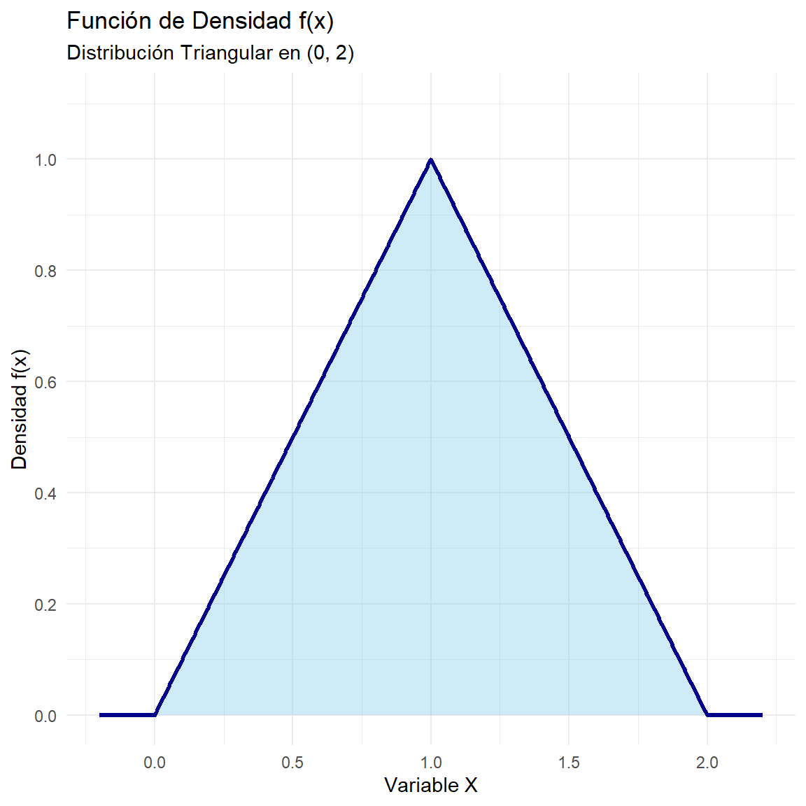
b) Función de Distribución:
Para una variable continua F(x) = \int_{-\infty}^{x} f(t) dt Debido a la forma de nuestra función, debemos definirla por tramos:
Tramo x < 0: F(x) = 0
Tramo 0 \leq x < 1: Integramos la primera parte (t):
F(x) = \int_{0}^{x} t \, dt = \left[ \frac{t^2}{2} \right]_{0}^{x} = \mathbf{\frac{x^2}{2}}
Aquí ya acumulamos el área del primer triángulo (0.5) y sumamos la integral de la bajada (2-t):
F(x) = 0.5 + \int_{1}^{x} (2 - t) \, dt = 0.5 + \left[ 2t - \frac{t^2}{2} \right]_{1}^{x}
F(x) = 0.5 + (2x - \frac{x^2}{2}) - (2 - 0.5) = \mathbf{2x - \frac{x^2}{2} - 1}
Representación Gráfica función de distribución
# Definimos la función F(x) calculada analíticamente
F_acumulada <- function(x) {
ifelse(x < 0, 0,
ifelse(x < 1, (x^2)/2,
ifelse(x < 2, 2*x - (x^2)/2 - 1, 1)))
}
# Datos para la gráfica
df_9b <- data.frame(x = seq(-0.2, 2.2, length.out = 1000))
df_9b$y <- F_acumulada(df_9b$x)
ggplot(df_9b, aes(x = x, y = y)) +
geom_line(color = "firebrick", size = 1.2) +
scale_y_continuous(breaks = seq(0, 1, 0.2)) +
scale_x_continuous(breaks = seq(0, 2, 0.5)) +
labs(
title = "Función de Distribución Acumulada F(x)",
subtitle = "Probabilidad acumulada desde 0 hasta 2",
x = "Variable X",
y = "F(x)"
) +
theme_minimal()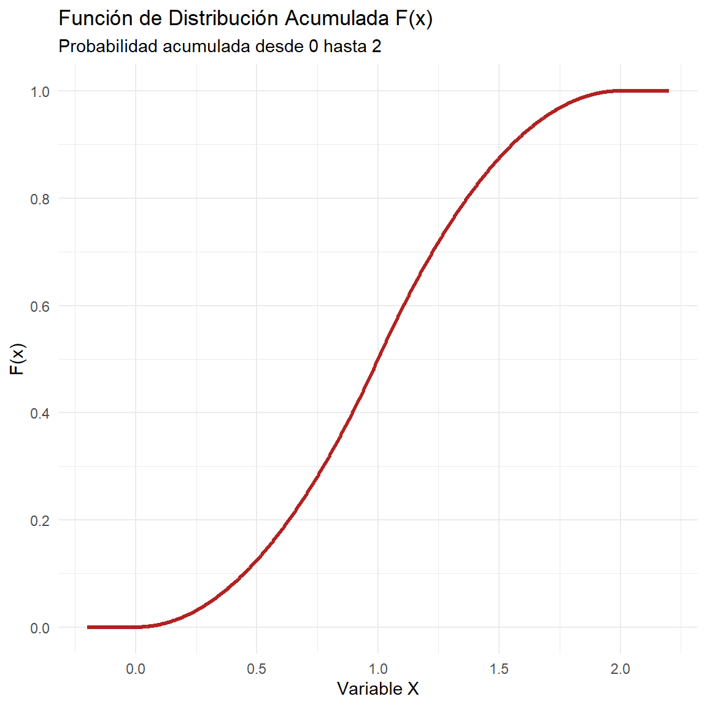
c) Esperanza, Varianza, Desviación y Coeficiente de Variación
# 1. Definimos la función de densidad (por si no está en el ambiente)
f_densidad <- function(x) {
ifelse(x > 0 & x < 1, x,
ifelse(x >= 1 & x < 2, 2 - x, 0))
}
# --- INDICADOR 1: Esperanza E[X] ---
# Como es simétrica entre 0 y 2, esperamos que sea 1.
esperanza <- integrate(function(x) x * f_densidad(x), lower = 0, upper = 2)$value
# --- INDICADOR 2: Varianza Var(X) ---
# Calculamos E[X^2] y restamos el cuadrado de la esperanza
segundo_momento <- integrate(function(x) x^2 * f_densidad(x), lower = 0, upper = 2)$value
varianza <- segundo_momento - esperanza^2
# --- INDICADOR 3: Desviación Típica (sigma) ---
desviacion <- sqrt(varianza)
# --- INDICADOR 4: Coeficiente de Variación (CV) ---
cv <- (desviacion / esperanza) * 100
# Resultados formateados
cat("--- Indicadores Estadísticos (Ejercicio 4 (9)) ---",
"\nEsperanza (Media): ", esperanza,
"\nVarianza: ", round(varianza, 4),
"\nDesviación Típica: ", round(desviacion, 4),
"\nCoef. de Variación: ", round(cv, 2), "%")--- Indicadores Estadísticos (Ejercicio 4 (9)) ---
Esperanza (Media): 1
Varianza: 0.1667
Desviación Típica: 0.4082
Coef. de Variación: 40.82 %Esperanza (E[X] = 1):
Es el punto de equilibrio. Al ser un triángulo isósceles, el centro de masa cae exactamente en el vértice superior proyectado al eje x.
Varianza (Var(X) = 1/6 \approx 0.1667):
La varianza en una distribución triangular simétrica de base b y altura h se puede calcular también por fórmula, pero la integración nos confirma que la dispersión es baja porque la mayor parte del área está “amontonada” cerca del 1.
Desviación Típica (\sigma \approx 0.4082):
Nos indica que, en promedio, los valores de X se alejan apenas 0.40 unidades de la media. Es una distribución bastante compacta.
Coeficiente de Variación (CV \approx 40.82\%):
Al ser menor al 50%, podemos decir que la media es representativa y que la variabilidad es moderada. En comparación con el ejercicio anterior (donde el CV era casi 60%), este ejercicio tiene datos mucho más concentrados.
library(ggplot2)
# 1. Definimos f(x) y calculamos los indicadores (si no los tienes)
f_densidad <- function(x) {
ifelse(x > 0 & x < 1, x,
ifelse(x >= 1 & x < 2, 2 - x, 0))
}
# Valores exactos para graficar
esp <- 1 # 1.0000
var_x <- 1/6 # 0.1667
desv <- sqrt(1/6) # 0.4082
cv_val <- 40.82 # 40.82%
# 2. Creamos los datos para la gráfica
x_seq <- seq(-0.2, 2.2, length.out = 1000)
df_9 <- data.frame(x = x_seq, y = f_densidad(x_seq))
# 3. Generamos la gráfica con anotaciones
ggplot(df_9, aes(x = x, y = y)) +
# Áreas de densidad (triángulo gris suave)
geom_area(fill = "gray95", color = "black", alpha = 0.5) +
# INDICADOR 1: Esperanza (Línea roja central)
geom_vline(xintercept = esp, color = "red", linetype = "dashed", size = 1.2) +
# INDICADOR 2 y 3: Desviación Típica (Rango y Sombreado)
# Sombreado que muestra el rango E[X] +/- sigma
annotate("rect", xmin = esp - desv, xmax = esp + desv,
ymin = 0, ymax = 0.8, alpha = 0.2, fill = "orange") +
# Líneas de borde del rango de desviación
geom_vline(xintercept = c(esp - desv, esp + desv), color = "darkorange3", linetype = "dotted") +
# INDICADOR 4: Etiqueta de texto para Varianza y CV
annotate("label", x = 0.1, y = 0.9,
label = paste0("Var(X) = ", round(var_x, 4), "\nCV = ", round(cv_val, 1), "%"),
fill = "white", fontface = "bold", hjust = 0) +
# Etiquetas de guía
annotate("text", x = esp, y = -0.05, label = "E[X]", color = "red", fontface = "bold") +
annotate("text", x = esp, y = 0.4, label = "Rango de Desviación (σ)", color = "darkorange3", fontface = "bold") +
# Estética y Ejes
scale_x_continuous(breaks = seq(0, 2, 0.5)) +
scale_y_continuous(limits = c(-0.1, 1.1), breaks = seq(0, 1, 0.2)) +
labs(
title = "Análisis de Indicadores: Variable X (Triangular)",
subtitle = "La Esperanza (1.0) coincide con la moda por simetría",
x = "Variable X",
y = "Densidad f(x)"
) +
theme_minimal()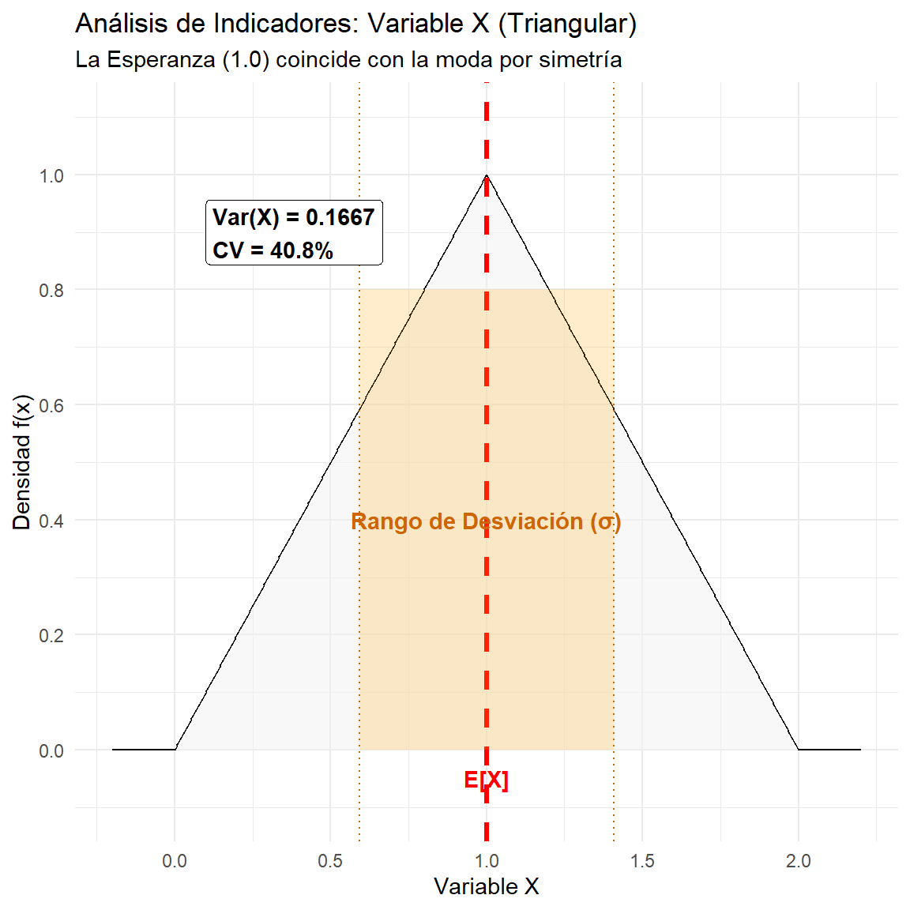
d) Análisis de posición: Percentiles 30 y 70 de la distribución.
Para resolver esto, utilizaremos la Función de Distribución Acumulada F(x) que calculamos en el inciso (b).
Recuerda que un percentil k es el valor de x tal que F(x) = k/100.
Buscamos el valor de x tal que F(x) = 0.30.
Como 0.30 es menor que 0.5 (el área del primer triángulo), sabemos que P_{30} cae en el primer tramo (0 \leq x < 1):
F(x) = \frac{x^2}{2}
\frac{x^2}{2} = 0.30
x^2 = 0.60
x = \sqrt{0.60} \approx \mathbf{0.7746}
Buscamos el valor de x tal que F(x) = 0.70.
Como 0.70 es mayor que 0.5, sabemos que P_{70} cae en el segundo tramo (1 \leq x < 2):
F(x) = 2x - \frac{x^2}{2} - 1 = 0.70
Para resolver esto, igualamos a cero y formamos una ecuación cuadrática:
-\frac{1}{2}x^2 + 2x - 1.70 = 0
Multiplicamos por -2 para simplificar:
x^2 - 4x + 3.4 = 0
Usando la fórmula cuadrática x = \frac{-b \pm \sqrt{b^2 - 4ac}}{2a}:
x = \frac{4 \pm \sqrt{(-4)^2 - 4(1)(3.4)}}{2}
x = \frac{4 \pm \sqrt{16 - 13.6}}{2} = \frac{4 \pm \sqrt{2.4}}{2}
x \approx \frac{4 \pm 1.5492}{2}
Esto nos da dos soluciones: 2.77 (fuera de rango) y 1.2254. Por lo tanto, P_{70} \approx 1.2254.
Grafica de Percentiles
#| label: percentiles-ejercicio9
#| echo: true
# Definimos la FDA acumulada
F_acumulada <- function(x) {
ifelse(x < 0, 0,
ifelse(x < 1, (x^2)/2,
ifelse(x < 2, 2*x - (x^2)/2 - 1, 1)))
}
# Hallamos los percentiles buscando la raíz de F(x) - p = 0
p30 <- uniroot(function(x) F_acumulada(x) - 0.30, lower = 0, upper = 2)$root
p70 <- uniroot(function(x) F_acumulada(x) - 0.70, lower = 0, upper = 2)$root
# Gráfica de los percentiles sobre la FDA
library(ggplot2)
df_F <- data.frame(x = seq(-0.2, 2.2, length.out = 1000))
df_F$y <- F_acumulada(df_F$x)
ggplot(df_F, aes(x = x, y = y)) +
geom_line(color = "darkgreen", size = 1.2) +
# Líneas de los percentiles
geom_segment(aes(x = 0, y = 0.3, xend = p30, yend = 0.3), linetype = "dashed") +
geom_segment(aes(x = p30, y = 0, xend = p30, yend = 0.3), linetype = "dashed", color = "blue") +
geom_segment(aes(x = 0, y = 0.7, xend = p70, yend = 0.7), linetype = "dashed") +
geom_segment(aes(x = p70, y = 0, xend = p70, yend = 0.7), linetype = "dashed", color = "red") +
annotate("text", x = p30, y = -0.05, label = paste("P30=", round(p30, 2)), color = "blue") +
annotate("text", x = p70, y = -0.05, label = paste("P70=", round(p70, 2)), color = "red") +
labs(title = "Ubicación de los Percentiles 30 y 70", x = "x", y = "F(x)") +
theme_minimal()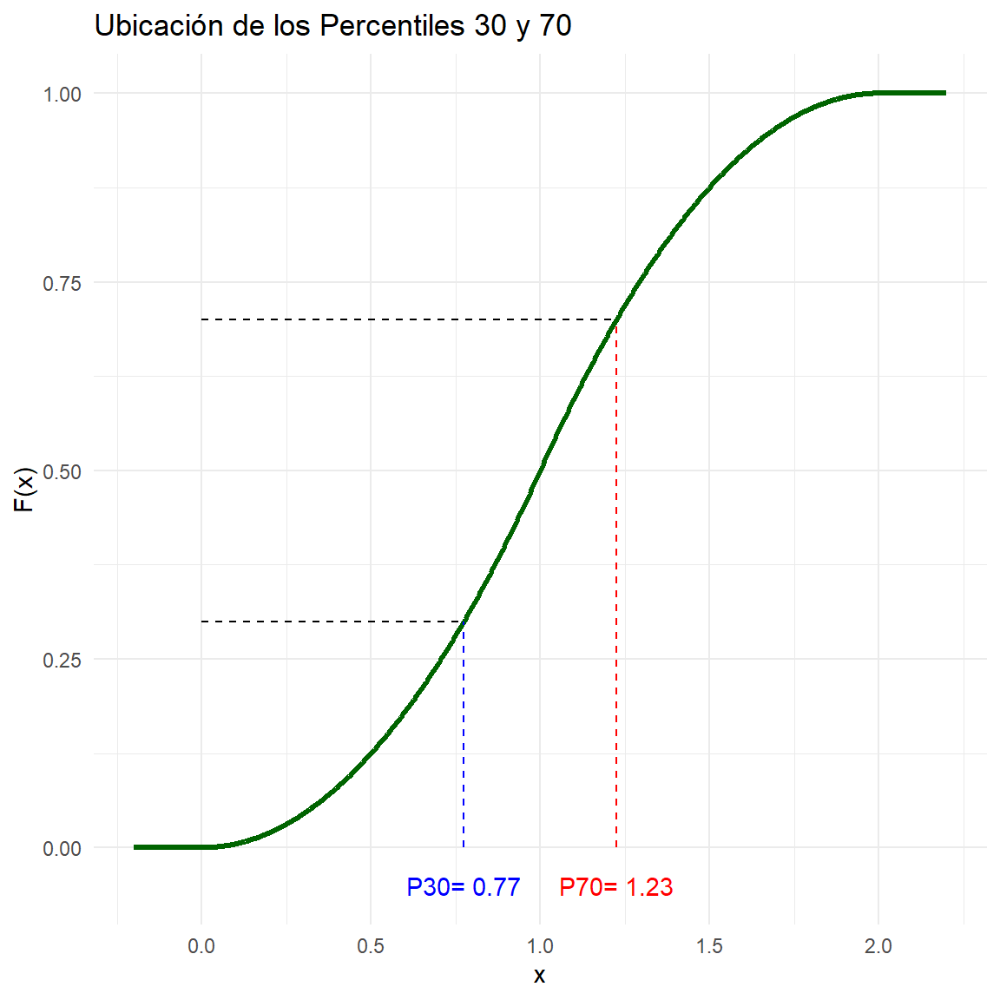
P_{30} = 0.77: Significa que el 30% de los datos son menores o iguales a 0.77.
P_{70} = 1.23: Significa que el 70% de los datos son menores o iguales a 1.23.
En una población determinada, la cantidad de plomo presente en la sangre de los individuos (X), medida en partes por millón (p.p.m.), se modela como una variable aleatoria continua con la siguiente función de densidad:
f(x) = \begin{cases} \dfrac{x}{500} & \text{si } 0 \leq x < 20 \ \dfrac{50 - x}{750} & \text{si } 20 \leq x < 50 \ 0 & \text{en el resto} \end{cases}
a) Visualización: Representar gráficamente la función de densidad f(x) para observar el comportamiento de la distribución.
b) Validación: Demostrar analíticamente que f(x) cumple las propiedades de una función de densidad (no negatividad e integral de la unidad).
c) Probabilidad Condicional: De entre las personas de la comunidad cuyo contenido de plomo es superior a 15 p.p.m., determinar qué porcentaje presenta niveles superiores a 40 p.p.m.
d) Medida de Tendencia Central: Calcular la cantidad media (esperanza matemática) de plomo en la sangre de los individuos de esta población.
e) Probabilidad de Riesgo Bajo: Obtener la probabilidad de que una persona elegida al azar tenga una cantidad de plomo inferior a 25 p.p.m.
f) Análisis de Muestreo (Binomial): Si se eligen 40 personas al azar, obtener la probabilidad de que entre 15 y 20 de ellas presenten una cantidad de plomo inferior a 25 p.p.m.
a) Representación Gráfica de f(x)
library(ggplot2)
# Definimos la función de densidad f(x)
f_plomo <- function(x) {
ifelse(x >= 0 & x < 20, x / 500,
ifelse(x >= 20 & x < 50, (50 - x) / 750, 0))
}
# Datos para graficar
df_19 <- data.frame(x = seq(-5, 55, length.out = 1000))
df_19$y <- f_plomo(df_19$x)
ggplot(df_19, aes(x = x, y = y)) +
geom_area(fill = "olivedrab3", alpha = 0.4, color = "darkgreen") +
scale_x_continuous(breaks = seq(0, 50, 10)) +
labs(title = "Función de Densidad f(x): Niveles de Plomo",
subtitle = "Distribución Triangular Asimétrica",
x = "Plomo (p.p.m.)", y = "f(x)") +
theme_minimal()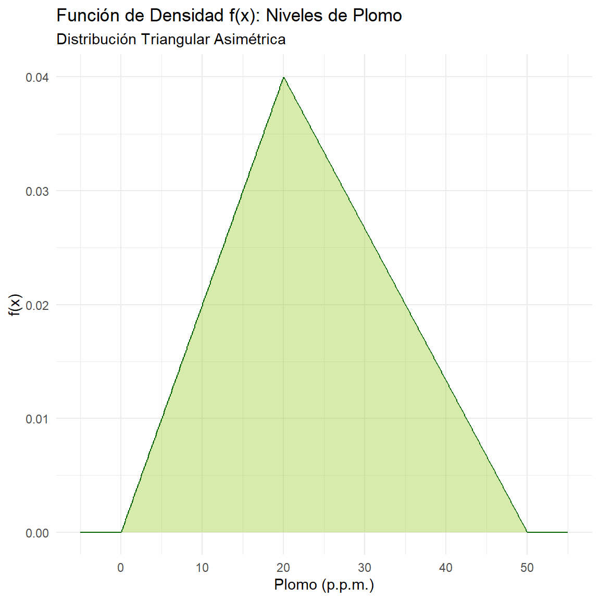
b) Demostrar que f(x) es una función de densidad
Validamos que la integral total sea 1:
\int_{0}^{20} \frac{x}{500} dx + \int_{20}^{50} \frac{50-x}{750} dx
Tramo 1: \left[ \frac{x^2}{1000} \right]_{0}^{20} = \frac{400}{1000} = \mathbf{0.4}
Tramo 2: \left[ \frac{50x - x^2/2}{750} \right]_{20}^{50} = \frac{(2500 - 1250) - (1000 - 200)}{750} = \frac{1250 - 800}{750} = \frac{450}{750} = \mathbf{0.6}
Suma: 0.4 + 0.6 = \mathbf{1}.
c) Probabilidad Condicional
“De entre las personas con plomo > 15, ¿qué porcentaje tiene > 40?”. Es una probabilidad condicional: P(X > 40 | X > 15).
P(X > 40 | X > 15) = \frac{P(X > 40)}{P(X > 15)}
# P(X > 40)
p_sup_40 <- integrate(f_plomo, 40, 50)$value
# P(X > 15)
p_sup_15 <- integrate(f_plomo, 15, 50)$value
resultado_c <- (p_sup_40 / p_sup_15) * 100
cat("El porcentaje es:", round(resultado_c, 2), "%")El porcentaje es: 8.6 %d) Esperanza, Varianza, Desviación y Coeficiente de Variación
#| label: indicadores-ejercicio-19
#| echo: true
# 1. Definimos la función de densidad f(x) para el plomo
f_plomo <- function(x) {
ifelse(x >= 0 & x < 20, x / 500,
ifelse(x >= 20 & x < 50, (50 - x) / 750, 0))
}
# --- INDICADOR 1: Esperanza E[X] ---
esperanza_19 <- integrate(function(x) x * f_plomo(x), lower = 0, upper = 50)$value
# --- INDICADOR 2: Varianza Var(X) ---
# E[X^2] - (E[X])^2
segundo_momento_19 <- integrate(function(x) x^2 * f_plomo(x), lower = 0, upper = 50)$value
varianza_19 <- segundo_momento_19 - esperanza_19^2
# --- INDICADOR 3: Desviación Típica (sigma) ---
desviacion_19 <- sqrt(varianza_19)
# --- INDICADOR 4: Coeficiente de Variación (CV) ---
cv_19 <- (desviacion_19 / esperanza_19) * 100
# Resultados en consola
cat("--- Indicadores Estadísticos (Ejercicio 19) ---",
"\nEsperanza (Media): ", round(esperanza_19, 4), " p.p.m.",
"\nVarianza: ", round(varianza_19, 4),
"\nDesviación Típica: ", round(desviacion_19, 4), " p.p.m.",
"\nCoef. de Variación: ", round(cv_19, 2), "%")--- Indicadores Estadísticos (Ejercicio 19) ---
Esperanza (Media): 23.3333 p.p.m.
Varianza: 105.5557
Desviación Típica: 10.274 p.p.m.
Coef. de Variación: 44.03 %Esperanza (E[X]) 23.33 p.p.m.
Es el valor promedio de plomo. Nota que es mayor a 20 (el pico) porque la “cola” de la derecha es más larga.
Varianza (\sigma^2) 105.55
Indica la dispersión de los datos al cuadrado.
Desviación (\sigma) 10.27 p.p.m.
En promedio, los niveles de plomo varían ±10.27 unidades respecto a la media.
C. Variación (CV) 44.03%
Como es menor al 50%, la media se considera representativa del conjunto de datos.
library(ggplot2)
x_vals <- seq(-5, 55, length.out = 1000)
df_plot <- data.frame(x = x_vals, y = f_plomo(x_vals))
ggplot(df_plot, aes(x = x, y = y)) +
geom_area(fill = "olivedrab3", alpha = 0.3, color = "darkgreen") +
# Línea de la Media
geom_vline(xintercept = esperanza_19, color = "red", linetype = "dashed", size = 1) +
# Sombreado de Desviación (E[X] +/- sigma)
annotate("rect", xmin = esperanza_19 - desviacion_19, xmax = esperanza_19 + desviacion_19,
ymin = 0, ymax = 0.02, alpha = 0.2, fill = "orange") +
annotate("text", x = esperanza_19, y = 0.045, label = "E[X] = 23.33", color = "red") +
labs(title = "Análisis de Indicadores: Contenido de Plomo",
subtitle = "La línea roja indica el centro de masa de la distribución",
x = "p.p.m.", y = "Densidad") +
theme_minimal()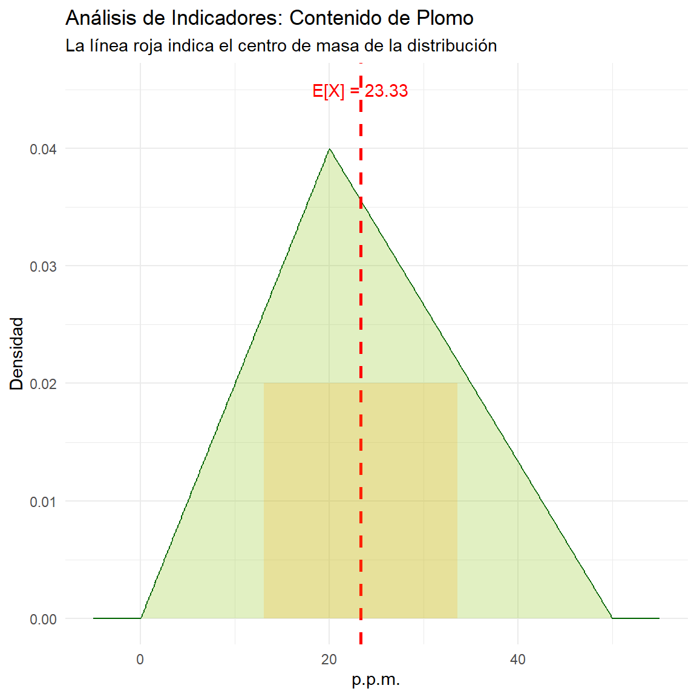
e) Probabilidad de X < 25
P(X < 25) = \int_{0}^{20} \frac{x}{500} dx + \int_{20}^{25} \frac{50-x}{750} dx
prob_inf_25 <- integrate(f_plomo, 0, 25)$value
cat("P(X < 25) =", round(prob_inf_25, 4))P(X < 25) = 0.5833f) Distribución Binomial
En 40 personas, ¿qué probabilidad hay de que entre 15 y 20 tengan menos de 25 p.p.m.?“. Aquí usamos la Binomial donde:
# Usamos p_inf_25 del punto anterior
p_bin <- prob_inf_25
# P(15 <= K <= 20)
prob_final <- sum(dbinom(15:20, size = 40, prob = p_bin))
cat("La probabilidad final es:", round(prob_final, 4))La probabilidad final es: 0.179